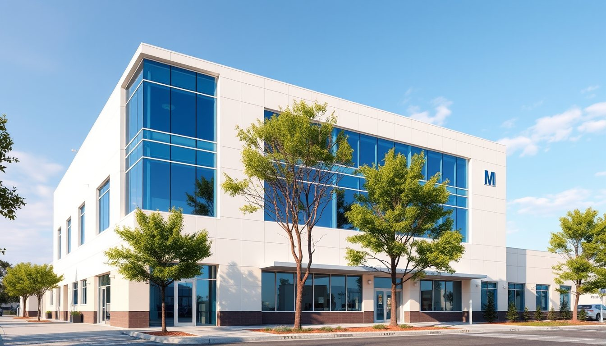
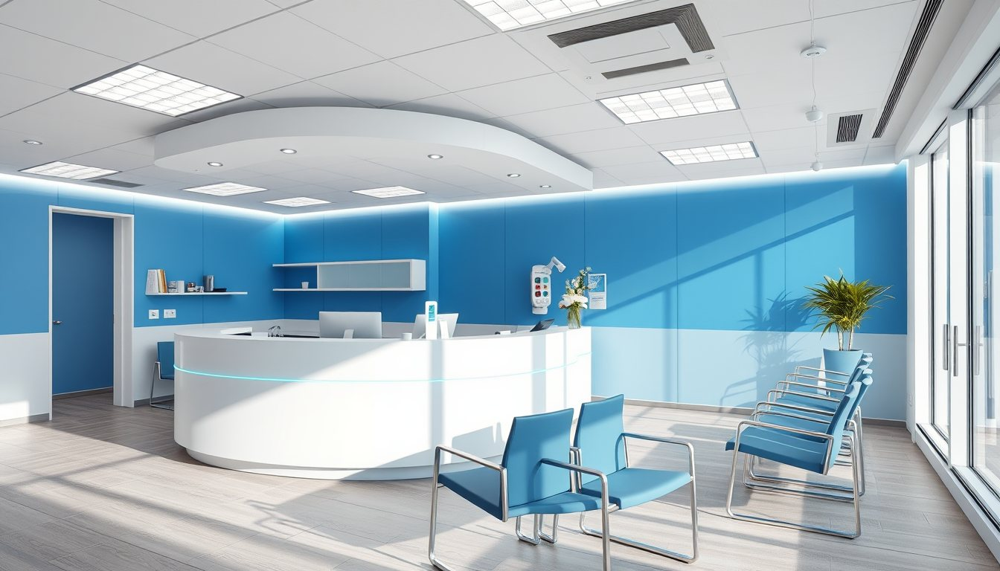
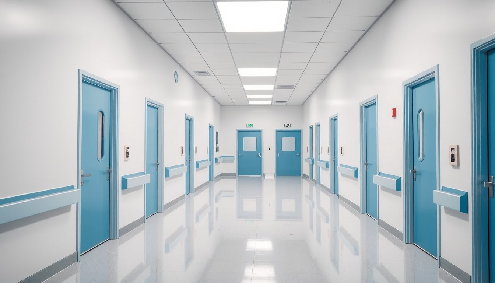
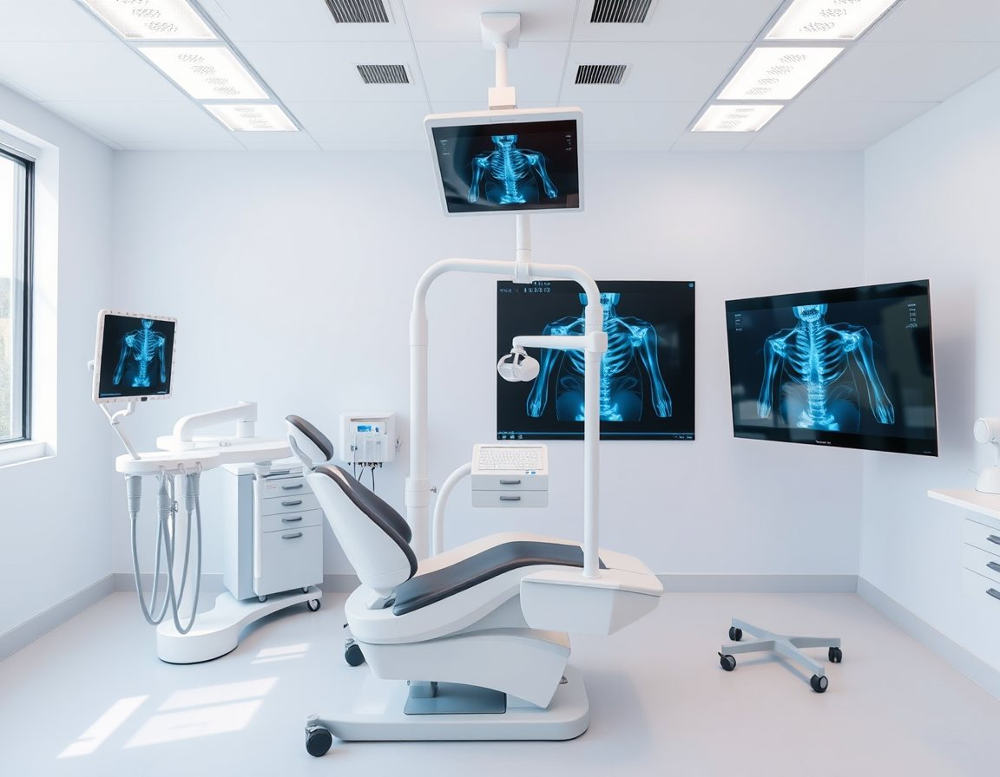

İzlenebilir sterilizasyon
Her paketin üzerinde sterilizasyon tarihi ve çevrim numarası bulunur.
Altı uzmanlık bölümü ve dokuz hekimle, çocuk muayenesinden implant üstü protezlere kadar tüm süreç aynı binada, aynı dosyada.




Hasta koordinatörü dosyanızı açar, randevunuzu ve anlaşmalı kurum bilgilerinizi kontrol eder.
Her bölümün kendi odası; bekleme süresini kısaltan planlı randevu sistemi.
Panoramik ve sefalometrik çekim aynı katta; sonuç birkaç dakikada hekiminizin ekranında.
Tüm aletler B sınıfı otoklavda sterilize edilir, mühürlü paketlerde saklanır ve sizin önünüzde açılır.
Bölümler arası geçişte dosyanız sizinle gelir; hekimler haftalık vaka toplantısında birlikte planlar.
Şikâyetinizi seçin; hangi bölümün ilgilendiğini görün. Emin değilseniz genel muayene ile başlayabilirsiniz.
Ağrının kaynağı çoğu zaman diş içindeki sinirdir. Kanal tedavisi gerekip gerekmediği röntgenle değerlendirilir.
Her paketin üzerinde sterilizasyon tarihi ve çevrim numarası bulunur.
Dijital sensörlerle, gerektiği kadar ve hekim istemiyle çekim.
Randevular arası oda hazırlık süresi, bekleme süresine dahil edilmez.
Talebinizi aldıktan sonra hasta koordinatörümüz aynı gün içinde sizi arar.